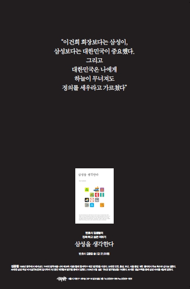

삼성을 생각한다
삼성을 생각한다김용철 지음 / 사회평론
나의 점수 :
이 기사를 보고 나서 내가 쓰는 삼성 제품이 몇 개나 되는지 헤아려봤다. 지금 두드리고 있는 키보드 하나... 아이쿠, 냉장고가 삼성이로구나. 2001년까지 고향집에서 가져온 Goldstar 제품을 썼는데 어느 날 냉동실이 주르르 눈물을 쏟아내며 사망한 이후 별 생각 없이 구매하고 써왔다.
세상에 보탬이 되기엔 가진 것도 재주도 없지만, 대신 누구에게나 있는 기본적인 권리를 잘 가려서 효과적으로 쓸 수는 있다. 함부로 구매하지 않고 함부로 투표(안)하지 않는 것이야말로 쉽고도 어려운 기본적인 실천임을 새삼 깨닫는다.
